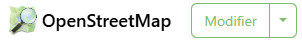
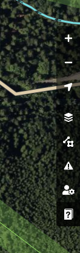

À faire vous-même 1
Après avoir regardé la vidéo ci-dessous, résumez en quelques lignes ce qu'est Open Street Map, dans un traitement de texte de votre choix.
Comment contribuer à Open Street Map ?
Voici une courte vidéo qui vous montre comment contribuer au projet Open Street Map sans être un spécialiste.
À faire vous-même 2
Rendez-vous le site Open Street Map https://www.openstreetmap.org/. Vous ne devez pas créer un compte, votre professeur a créé un compte pour votre classe, demandez-lui l'identifiant et le mot de passe de ce compte afin de pouvoir vous connecter.
Une fois connecté grâce au nom d'utilisateur et au mot de passe fournis par votre professeur, vous allez choisir une zone à explorer avant d'envisager de "Commencer à cartographier".
Pour choisir, cette zone, il faut très bien la connaître, parce que c'est, soit dans votre voisinage, soit un lieu que vous fréquentez souvent. Ensuite, vous devez identifier quelque chose d'améliorable. Une fois que avez trouvé quelquechose de concret à réaliser, faites en part à votre enseignant avant de "Commencer à cartographier".
ATTENTION, vous devez uniquement ajouter des points. Ne modifiez pas les points existants (sauf si vous constatez une erreur flagrante, vous pouvez alors modifier les données associées à un point), ne créez pas de polygones, ne modifiez pas les polygones existants, ne créez pas de chemins, ne modifiez pas les chemins existants. Pourquoi ? Simplement parce que la gestion des polygones ou des chemins demande une expertise que vous ne pouvez pas acquérir pendant la durée de cette séance : une fausse manoeuvre sur un polygone ou sur un chemin peut entrainer des conséquences fâcheuses. Donc, créez des points et uniquement des points !
Les contributeurs d'Open Street Map sont tous bénévoles, ils oeuvrent pour le bien de tous en effectuant un travail d'une grande qualité, merci de respecter ce travail en ne faisant pas n'importe quoi.
Une fois prêt vous cliquez sur le bouton "modifier" en haut à gauche de l'écran. Vous allez, avant de pouvoir commencer à contribuer à Open Street Map. 
Pour accéder à davantage de fonctionnalités ou à l'aide, n'hésitez pas à cliquer sur la barre de menu de droite, cliquez sur l'icône située tout en bas (le livre avec un point d'interrogation) par exemple pour accéder à des explications. 
À faire vous-même 3
Une fois votre travail sur Open Street Map terminé, rédigez un compte rendu de quelques lignes qui expliquera en quoi vous avez contribué au projet (ajouts, corrections...) sur le même traitement de texte que plus haut.

Auteur : David Roche